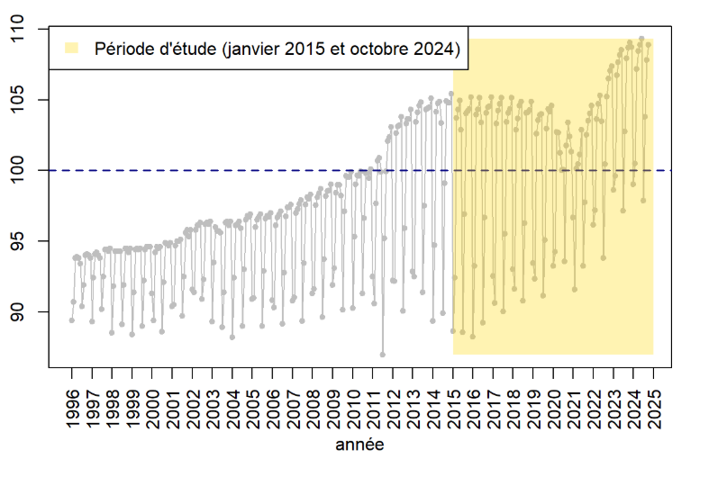
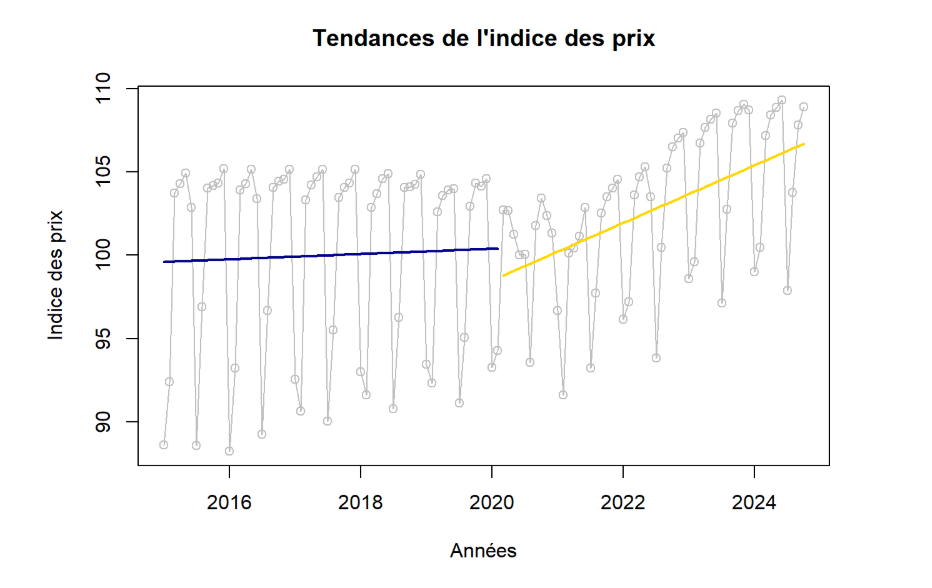
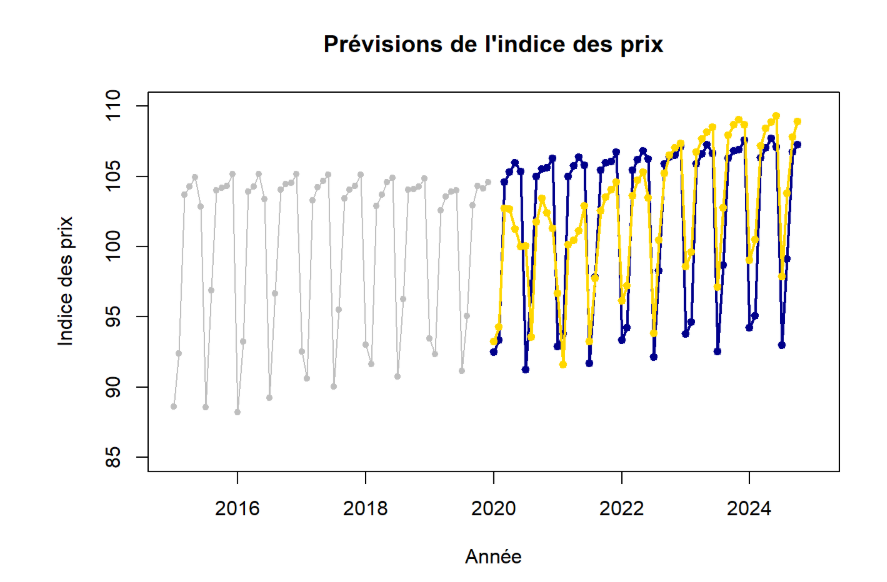

← Retour à la liste des projets
Analyse temporelle de l’Indice des Prix à la Consommation
SAÉ 3. 03 Description et prévision de données
Compétence principale mobilisée : Valoriser des données dans un contexte professionnel
Description du projet
Dans le cadre de cette SAÉ, notre groupe a travaillé sur l’analyse et la prévision d’une série chronologique portant sur l’Indice des Prix à la Consommation (IPC) dans le secteur de l’habillement et des chaussures. L’objectif était de déterminer si la crise sanitaire liée à la COVID-19 avait eu un impact sur cet indicateur économique.
Le projet s’inscrivait dans un contexte professionnel de chargé d’études économiques et statistiques, et visait à modéliser une série temporelle afin d’en extraire les tendances principales et de réaliser des prévisions à court terme.
Présentation de l'application
Le projet s’est déroulé principalement dans un Notebook R. Celui-ci comprenait plusieurs étapes :
- Présentation du contexte, de la problématique et des données (source, période, fréquence mensuelle, unité de mesure)
- Décomposition de la série selon un modèle additif afin d’isoler la tendance et la saisonnalité
- Calcul des coefficients saisonniers et obtention d’une série désaisonnalisée
- Analyse des résidus pour évaluer la qualité du modèle
- Prévisions à court terme à l’aide d’une méthode de lissage exponentiel
L’interface développée permet de visualiser les différentes composantes de la série, les courbes de tendance, et les projections futures. Le code est structuré, commenté, et adapté à une analyse reproductible. Il met en œuvre à la fois les bibliothèques Python (Pandas, Matplotlib) et des techniques classiques d’analyse temporelle.
Extraits de l'application
Une première annalyse avec la visualisation de la série temporelles en identifiant une periode d'ananlyse pour répondre à la problématique (periode en jaune)

Ensuite on ananlyse la tendance de notre periode. Dans notre cas, on à identifé deux periode assez différentes et donc deux tendance dans notre periode.

Enfin pour répondre à notre problématique on produit deux prévisions, une prévision sans prendre l'année du covid (ci-dessous) et une en prenant l'année du covid en année de reférence pour la prévision (voir notebook)

Livrables
- Synthèse de 4 pages en PDF
- Notebook HTML commenté
Compétence mise en avant
Ce projet m’a permis de structurer une analyse statistique rigoureuse, de la rendre accessible et compréhensible à un public non technique via une synthèse écrite, et de m’exprimer en anglais sur les résultats clés.
Lien vers le notebook
Voir le notebook
Outils utilisés
Méthodes statistiques :
Description de données temporelles (tendance, saisonnalité)
Prévision temporelle
Vérification des prévisions ( erreur quadratique moyenne, distribution des résidus)
Voici un aperçu de la synthèse inspirée de revue de l'INSEE que nous avons rendu à la fin du projet.